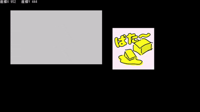

最終更新日 2026/03/01
★本記事ではDxLibでマウスの入力値など取得～ボタンを簡単に作ってみるところまでを目標にしています。
参考にした関数リファレンスサイトはこちら#pragma once
#include "IUpdatable.hpp"
#include "IRenderable.hpp"
class GameObject : public IUpdatable, public IRenderable
{
public:
virtual ~GameObject() = default;
};#pragma once
#include "DxLib.h"
#include "Vector2.hpp"
#include "GameObject.hpp"
class Mouse : public GameObject
{
public:
void Initialize();
void Update() override { Control(); }
void Render() const override;
const Vector2& GetPosition()const;
const bool GetLeftInputState()const;
const bool GetRightInputState()const;
const bool GetMiddleInputState()const;
protected:
private:
void Control();
Vector2 m_position{ 0,0 };
int m_mouseInput = 0;
int m_logType = 0;
bool m_isLeftPushed = false;
bool m_isRightPushed = false;
bool m_isMiddlePushed = false;
//---Debug---//
int m_debugTextColor = 0;
int m_fontHandle = 0;
}; #pragma once
#include "DxLib.h"
#include "GameObject.hpp"
#include "Mouse.hpp"
#include "Vector2.hpp"
#include
#include
class Button :public GameObject
{
public:
void Initialize(Mouse& m, const Vector2& topLeft, const Vector2& downRight);
void Render()const override;
void Update()override;
void Register(const std::function e);
bool Interactive = true;
bool Enabled = true;
protected:
private:
Vector2 m_topLeftVertex{ 100,100 };
Vector2 m_downRightVertex{ 980,620 };
Mouse* m_mouse = nullptr;
std::queue> m_onClick;
int m_color = GetColor(255, 255, 255);
bool m_isPusshed = false;
bool m_drawEventFlag = false;
}; 